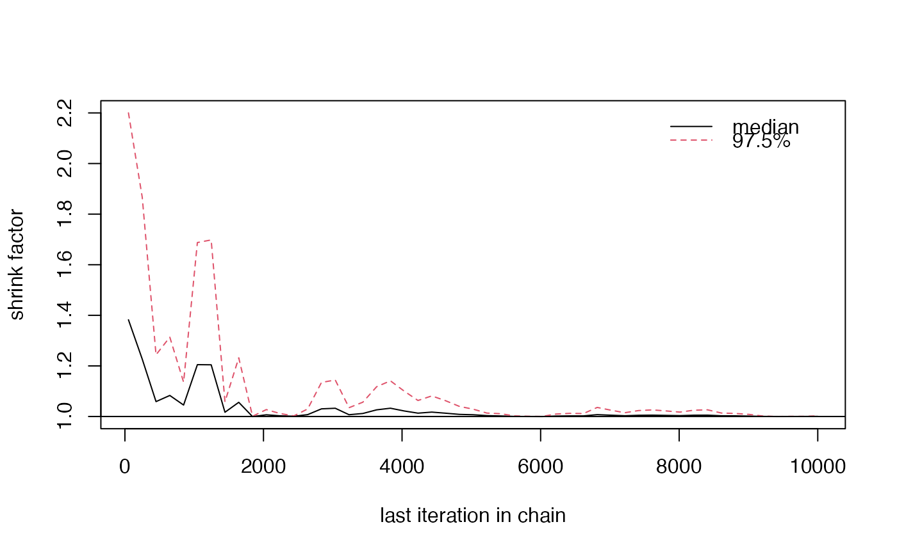

R/plot_diagnostics.R
redist.diagplot.Rdredist.diagplot generates several common MCMC diagnostic plots.
redist.diagplot(sumstat,
plot = c("trace", "autocorr", "densplot", "mean", "gelmanrubin"),
logit = FALSE, savename = NULL)A vector, list, mcmc or mcmc.list object
containing a summary statistic of choice.
The type of diagnostic plot to generate: one of "trace",
"autocorr", "densplot", "mean", "gelmanrubin". If plot = "gelmanrubin",
the input sumstat must be of class mcmc.list or list.
Flag for whether to apply the logistic transformation for the
summary statistic. The default is FALSE.
Filename to save the plot. Default is NULL.
Returns a plot of file type .pdf.
This function allows users to generate several standard diagnostic plots from the MCMC literature, as implemented by Plummer et. al (2006). Diagnostic plots implemented include trace plots, autocorrelation plots, density plots, running means, and Gelman-Rubin convergence diagnostics (Gelman & Rubin 1992).
Fifield, Benjamin, Michael Higgins, Kosuke Imai and Alexander Tarr. (2016) "A New Automated Redistricting Simulator Using Markov Chain Monte Carlo." Working Paper. Available at http://imai.princeton.edu/research/files/redist.pdf.
Gelman, Andrew and Donald Rubin. (1992) "Inference from iterative simulations using multiple sequences (with discussion)." Statistical Science.
Plummer, Martin, Nicky Best, Kate Cowles and Karen Vines. (2006) "CODA: Convergence Diagnosis and Output Analysis for MCMC." R News.
# \donttest{
data(fl25)
data(fl25_enum)
data(fl25_adj)
## Get an initial partition
init_plan <- fl25_enum$plans[, 5118]
## 25 precinct, three districts - no pop constraint ##
alg_253 <- redist.flip(adj = fl25_adj, total_pop = fl25$pop,
init_plan = init_plan, nsims = 10000)
#> Warning: Please use `redist_flip`. This will be gone in 4.1.
#>
#> ====================
#> redist.flip(): Automated Redistricting Simulation Using
#> Markov Chain Monte Carlo
#>
#> Preprocessing data.
#>
#> Starting swMH().
#> ■ 0% | ETA:11s
#> ■ 0% | ETA:11s
#> ■■ 3% | ETA: 7s
#> ■■■ 5% | ETA: 7s
#> ■■■ 8% | ETA: 7s
#> ■■■■ 11% | ETA: 7s | MH Acceptance: 0.97
#> ■■■■■ 14% | ETA: 6s | MH Acceptance: 0.97
#> ■■■■■■ 17% | ETA: 6s | MH Acceptance: 0.97
#> ■■■■■■■ 20% | ETA: 6s | MH Acceptance: 0.97
#> ■■■■■■■■ 22% | ETA: 6s | MH Acceptance: 0.97
#> ■■■■■■■■■ 25% | ETA: 5s | MH Acceptance: 0.97
#> ■■■■■■■■■ 28% | ETA: 5s | MH Acceptance: 0.97
#> ■■■■■■■■■■ 31% | ETA: 5s | MH Acceptance: 0.97
#> ■■■■■■■■■■■ 34% | ETA: 5s | MH Acceptance: 0.97
#> ■■■■■■■■■■■■ 36% | ETA: 5s | MH Acceptance: 0.97
#> ■■■■■■■■■■■■■ 39% | ETA: 4s | MH Acceptance: 0.97
#> ■■■■■■■■■■■■■■ 42% | ETA: 4s | MH Acceptance: 0.97
#> ■■■■■■■■■■■■■■■ 45% | ETA: 4s | MH Acceptance: 0.97
#> ■■■■■■■■■■■■■■■ 48% | ETA: 4s | MH Acceptance: 0.97
#> ■■■■■■■■■■■■■■■■ 51% | ETA: 4s | MH Acceptance: 0.97
#> ■■■■■■■■■■■■■■■■■ 54% | ETA: 3s | MH Acceptance: 0.97
#> ■■■■■■■■■■■■■■■■■■ 57% | ETA: 3s | MH Acceptance: 0.97
#> ■■■■■■■■■■■■■■■■■■■ 60% | ETA: 3s | MH Acceptance: 0.97
#> ■■■■■■■■■■■■■■■■■■■■ 62% | ETA: 3s | MH Acceptance: 0.97
#> ■■■■■■■■■■■■■■■■■■■■■ 65% | ETA: 3s | MH Acceptance: 0.97
#> ■■■■■■■■■■■■■■■■■■■■■ 68% | ETA: 2s | MH Acceptance: 0.97
#> ■■■■■■■■■■■■■■■■■■■■■■ 71% | ETA: 2s | MH Acceptance: 0.97
#> ■■■■■■■■■■■■■■■■■■■■■■■ 74% | ETA: 2s | MH Acceptance: 0.97
#> ■■■■■■■■■■■■■■■■■■■■■■■■ 77% | ETA: 2s | MH Acceptance: 0.97
#> ■■■■■■■■■■■■■■■■■■■■■■■■■ 79% | ETA: 1s | MH Acceptance: 0.97
#> ■■■■■■■■■■■■■■■■■■■■■■■■■■ 82% | ETA: 1s | MH Acceptance: 0.97
#> ■■■■■■■■■■■■■■■■■■■■■■■■■■■ 85% | ETA: 1s | MH Acceptance: 0.97
#> ■■■■■■■■■■■■■■■■■■■■■■■■■■■ 88% | ETA: 1s | MH Acceptance: 0.97
#> ■■■■■■■■■■■■■■■■■■■■■■■■■■■■ 91% | ETA: 1s | MH Acceptance: 0.97
#> ■■■■■■■■■■■■■■■■■■■■■■■■■■■■■ 94% | ETA: 0s | MH Acceptance: 0.97
#> ■■■■■■■■■■■■■■■■■■■■■■■■■■■■■■ 97% | ETA: 0s | MH Acceptance: 0.97
#> ■■■■■■■■■■■■■■■■■■■■■■■■■■■■■■■ 99% | ETA: 0s | MH Acceptance: 0.97
#> ■■■■■■■■■■■■■■■■■■■■■■■■■■■■■■■ 100% | ETA: 0s | MH Acceptance: 0.97
#>
## Get Republican Dissimilarity Index from simulations
rep_dmi_253 <- redist.segcalc(alg_253, fl25$mccain, fl25$pop)
## Generate diagnostic plots
redist.diagplot(rep_dmi_253, plot = "trace")
redist.diagplot(rep_dmi_253, plot = "autocorr")
redist.diagplot(rep_dmi_253, plot = "densplot")
redist.diagplot(rep_dmi_253, plot = "mean")
## Gelman Rubin needs two chains, so we run a second
alg_253_2 <- redist.flip(adj = fl25_adj,
total_pop = fl25$pop,
init_plan = init_plan, nsims = 10000)
#> Warning: Please use `redist_flip`. This will be gone in 4.1.
#>
#> ====================
#> redist.flip(): Automated Redistricting Simulation Using
#> Markov Chain Monte Carlo
#>
#> Preprocessing data.
#>
#> Starting swMH().
#> ■ 0% | ETA:11s
#> ■ 0% | ETA:13s
#> ■■ 3% | ETA: 8s
#> ■■■ 6% | ETA: 7s
#> ■■■■ 9% | ETA: 7s
#> ■■■■■ 12% | ETA: 6s | MH Acceptance: 0.96
#> ■■■■■■ 15% | ETA: 6s | MH Acceptance: 0.96
#> ■■■■■■ 18% | ETA: 6s | MH Acceptance: 0.96
#> ■■■■■■■ 21% | ETA: 6s | MH Acceptance: 0.96
#> ■■■■■■■■ 24% | ETA: 5s | MH Acceptance: 0.96
#> ■■■■■■■■■ 27% | ETA: 5s | MH Acceptance: 0.96
#> ■■■■■■■■■■ 30% | ETA: 5s | MH Acceptance: 0.96
#> ■■■■■■■■■■■ 33% | ETA: 5s | MH Acceptance: 0.96
#> ■■■■■■■■■■■■ 36% | ETA: 4s | MH Acceptance: 0.96
#> ■■■■■■■■■■■■■ 39% | ETA: 4s | MH Acceptance: 0.96
#> ■■■■■■■■■■■■■■ 42% | ETA: 4s | MH Acceptance: 0.96
#> ■■■■■■■■■■■■■■■ 45% | ETA: 4s | MH Acceptance: 0.96
#> ■■■■■■■■■■■■■■■ 48% | ETA: 4s | MH Acceptance: 0.96
#> ■■■■■■■■■■■■■■■■ 51% | ETA: 3s | MH Acceptance: 0.96
#> ■■■■■■■■■■■■■■■■■ 54% | ETA: 3s | MH Acceptance: 0.96
#> ■■■■■■■■■■■■■■■■■■ 57% | ETA: 3s | MH Acceptance: 0.96
#> ■■■■■■■■■■■■■■■■■■■ 60% | ETA: 3s | MH Acceptance: 0.96
#> ■■■■■■■■■■■■■■■■■■■■ 63% | ETA: 3s | MH Acceptance: 0.96
#> ■■■■■■■■■■■■■■■■■■■■■ 66% | ETA: 2s | MH Acceptance: 0.96
#> ■■■■■■■■■■■■■■■■■■■■■■ 69% | ETA: 2s | MH Acceptance: 0.96
#> ■■■■■■■■■■■■■■■■■■■■■■■ 72% | ETA: 2s | MH Acceptance: 0.96
#> ■■■■■■■■■■■■■■■■■■■■■■■■ 75% | ETA: 2s | MH Acceptance: 0.96
#> ■■■■■■■■■■■■■■■■■■■■■■■■ 78% | ETA: 1s | MH Acceptance: 0.96
#> ■■■■■■■■■■■■■■■■■■■■■■■■■ 81% | ETA: 1s | MH Acceptance: 0.96
#> ■■■■■■■■■■■■■■■■■■■■■■■■■■ 84% | ETA: 1s | MH Acceptance: 0.96
#> ■■■■■■■■■■■■■■■■■■■■■■■■■■■ 86% | ETA: 1s | MH Acceptance: 0.96
#> ■■■■■■■■■■■■■■■■■■■■■■■■■■■■ 89% | ETA: 1s | MH Acceptance: 0.96
#> ■■■■■■■■■■■■■■■■■■■■■■■■■■■■ 91% | ETA: 1s | MH Acceptance: 0.96
#> ■■■■■■■■■■■■■■■■■■■■■■■■■■■■■ 94% | ETA: 0s | MH Acceptance: 0.96
#> ■■■■■■■■■■■■■■■■■■■■■■■■■■■■■■ 97% | ETA: 0s | MH Acceptance: 0.96
#> ■■■■■■■■■■■■■■■■■■■■■■■■■■■■■■■ 100% | ETA: 0s | MH Acceptance: 0.96
#>
rep_dmi_253_2 <- redist.segcalc(alg_253_2, fl25$mccain, fl25$pop)
## Make a list out of the objects:
rep_dmi_253_list <- list(rep_dmi_253, rep_dmi_253_2)
## Generate Gelman Rubin diagnostic plot
redist.diagplot(sumstat = rep_dmi_253_list, plot = "gelmanrubin")

# }